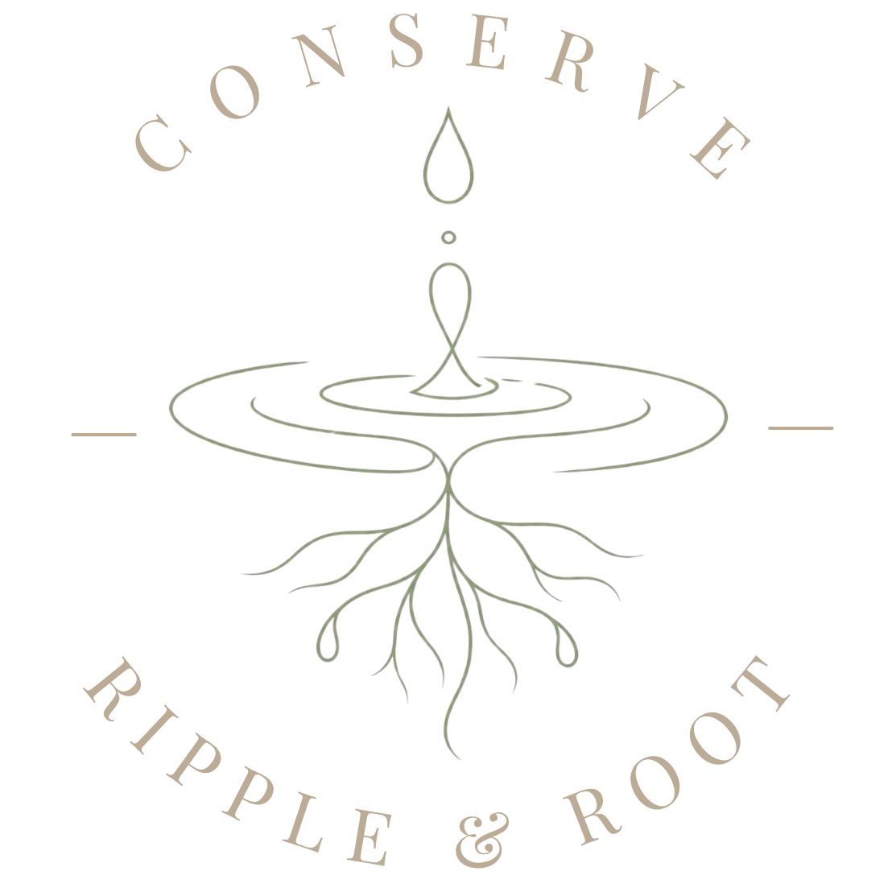
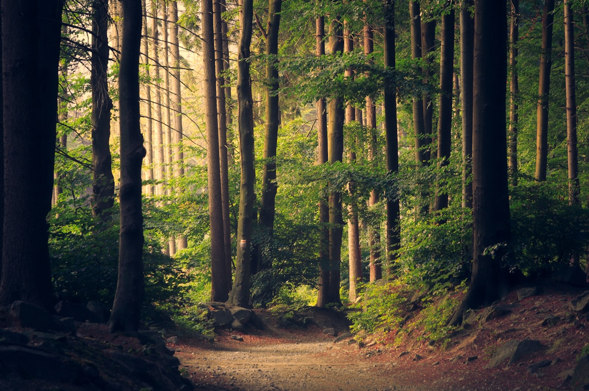

Small Actions. Lasting Change.
A youth-led initiative creating local awareness, monthly soil and water reports, and real conservation action—starting right where we live.
From monthly data reports to neighborhood projects, we turn curiosity into meaningful local action.
A clear “State of Our Local Soil & Water” series with photos, simple maps, explanations, and practical steps anyone can take.
A growing group of students interested in conservation. We’ll share knowledge, build practical skills, and organize action days together.
Storm-drain marking, rain-barrel workshops, native plant giveaways, compost drives, and more—small actions that can add up to meaningful change.
Soil and water are the foundation of every ecosystem and every community. When we protect them, we protect the food we grow, the wildlife around us, and the people who depend on them.
Ripple & Root begins with local awareness and hands-on conservation projects. Looking ahead, we’re also interested in how biotechnology can create new tools for conservation, restoration, and a healthier future.
This is just the beginning of something that can grow with us.
Our Full Story
Follow the monthly reports, join a skill-share, or simply try one action at home this week.